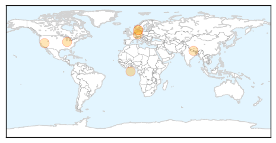

Toggle navigation
Early Warning
Daily Alerts
Measles
May 07, 2015
Compare to:
-
Dengue Fever
Hemmorhagic Fever
Mold/Fungal Infection
Influenza
Meningitis
Pertussis / Whooping Cough
Middle East Respiratory Syndrome
Cholera
Hepatitis
Chikungunya
Yellow Fever
Bubonic Plague
West Nile Virus
Swine Flu
Ebola
Unknown
Mumps
30 Day Trends
Web: 0
alerts
, 0
warnings
Twitter: 0
alerts
, 0
warnings
Top Articles:
0.951
Measles case at south Forsyth elementary school a false alarm
0.932
Vaccination rates fall below critical level
0.925
News Scan for May 07, 2015
0.849
Measles Immunization Coverage Rates Increase in Nevada
0.844
Nepal: Fear of measles outbreak prompts emergency vaccination campaign
0.808
Measles May Weaken Immune System for Up to 3 Years, Study Contends
0.778
Measles leaves you vulnerable to a host of deadly diseases
Top Tweets:
No tweets found for May 07, 2015
Web/News Articles
Tweets
Article Locations

Article Confidences